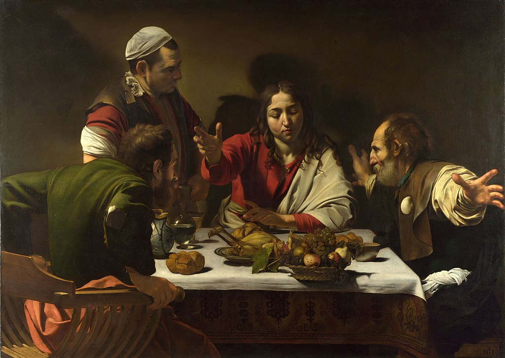

"The Calling of St Matthew" (1599–1600)

"Supper at Emmaus" (1601)

"The Musicians" (1595)

"The Taking of Christ" (1602)
"All works, no matter what or by whom painted, are nothing but bagatelles and childish trifles... unless they are made and painted from life, and there can be nothing... better than to follow nature."
Caravaggio (1571 – 1610) was active in Rome, Naples, Malta, and Sicily from the early 1590s to 1610. His paintings combine the realistic observation of the physical and emotional human situation with the dramatic use of lighting.
"The Calling of St Matthew" (1599–1600)
"Supper at Emmaus" (1601)
"The Musicians" (1595)
"The Taking of Christ" (1602)